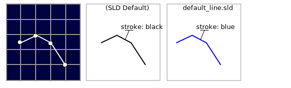
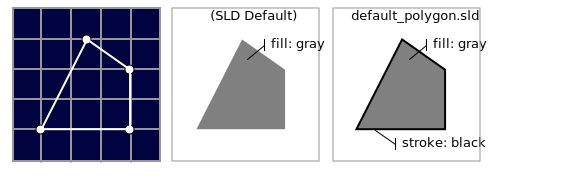
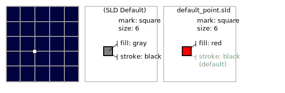
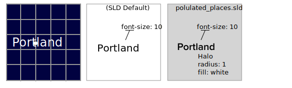

2.2. Style¶
The design choices made to represent content is a key aspect of cartography. The style used when rendering data into a visualisation is the result of these choices.
The Open Geospatial Consortium standard for recording style is divided into two parts:
Symbology Encoding (SE): Records a “feature type style” documenting how individual features are drawn using a series of rules.
Style Layer Descriptor (SLD): Records which “feature type styles” may be used with a layer.
The Symbology Encoding standard provides the terms we will be using to describe style:
Stroke: borders and outlines of shapes
Fill: interior of shapes
2.2.1. Line symbolizer¶
A line symbolizer documents how individual strokes are used to draw a line string, including color and line width.
The SLD specification provides a default stroke used when drawing line strings. These values for color and width will be used if needed.
<LineSymbolizer>
<Stroke/>
</LineSymbolizer>
GeoServer includes a default line.sld file providing a blue stroke. This file is used when you initially set up a linestring layer.
From GeoServer’s line.sld style:
<LineSymbolizer>
<Stroke>
<CssParameter name="stroke">#0000FF</CssParameter>
</Stroke>
</LineSymbolizer>
2.2.2. Polygon symbolizer¶
A polygon symbolizer documents both the the stroke in addition to the fill used to draw a polygon. A fill can consist of a color, pattern, or other texture:
The SLD specification provides a default gray fill, but does not supply a stroke. These values will be used if you do not provide an alternative.
GeoServer includes a default polygon.sld file providing a gray fill and a black outline. This file will be used when you initially create a polygon layer.
From GeoServer’s polygon.sld style:
<PolygonSymbolizer>
<Fill>
<CssParameter name="fill">#AAAAAA</CssParameter>
</Fill>
<Stroke>
<CssParameter name="stroke">#000000</CssParameter>
<CssParameter name="stroke-width">1</CssParameter>
</Stroke>
</PolygonSymbolizer>
2.2.3. Point symbolizer¶
A point symbolizer documents the “mark” used to represent a point. A mark may be defined by a glyph (icon) or a common mark (circle, square, etc.). The point symbolizer records the stroke and fill used to draw the mark.
From GeoServer’s default point.sld style:
<PointSymbolizer>
<Graphic>
<Mark>
<WellKnownName>square</WellKnownName>
<Fill>
<CssParameter name="fill">#FF0000</CssParameter>
</Fill>
</Mark>
<Size>6</Size>
</Graphic>
</PointSymbolizer>
2.2.4. Text symbolizer¶
A text symbolizer provides details on how labels are to be drawn, including font, size, and color information.
From the populated_places.sld style:
<sld:TextSymbolizer>
<sld:Label>
<ogc:PropertyName>NAME</ogc:PropertyName>
</sld:Label>
<sld:Font>
<sld:CssParameter name="font-family">Arial</sld:CssParameter>
<sld:CssParameter name="font-size">10.0</sld:CssParameter>
<sld:CssParameter name="font-style">normal</sld:CssParameter>
<sld:CssParameter name="font-weight">bold</sld:CssParameter>
</sld:Font>
<sld:Halo>
<sld:Radius>1</sld:Radius>
<sld:Fill>
<sld:CssParameter name="fill">#FFFFFF</sld:CssParameter>
</sld:Fill>
</sld:Halo>
<sld:Fill>
<sld:CssParameter name="fill">#000000</sld:CssParameter>
</sld:Fill>
</sld:TextSymbolizer>
Note
The Style Layer Descriptor standard makes use of the Filter Encoding specification to create small expressions as shown above to access the NAME of each city:
<ogc:PropertyName>NAME</ogc:PropertyName>
This same approach can be used to dynamically generate any values needed for styling.
2.2.5. Raster symbolizer¶
A raster symbolizer provides a mapping from raster values to colors displayed. This can be provided by a color table, function, or directly mapping bands of data to use for the display channels.
From GeoServer’s dem.sld style:
<RasterSymbolizer>
<Opacity>1.0</Opacity>
<ColorMap>
<ColorMapEntry color="#000000" quantity="-500" label="nodata" opacity="0.0" />
<ColorMapEntry color="#AAFFAA" quantity="0" label="values" />
<ColorMapEntry color="#00FF00" quantity="1000"/>
<ColorMapEntry color="#FFFF00" quantity="1200" label="values" />
<ColorMapEntry color="#FF7F00" quantity="1400" label="values" />
<ColorMapEntry color="#BF7F3F" quantity="1600" label="values" />
<ColorMapEntry color="#000000" quantity="2000" label="values" />
</ColorMap>
</RasterSymbolizer>